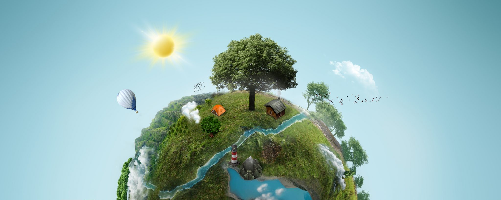
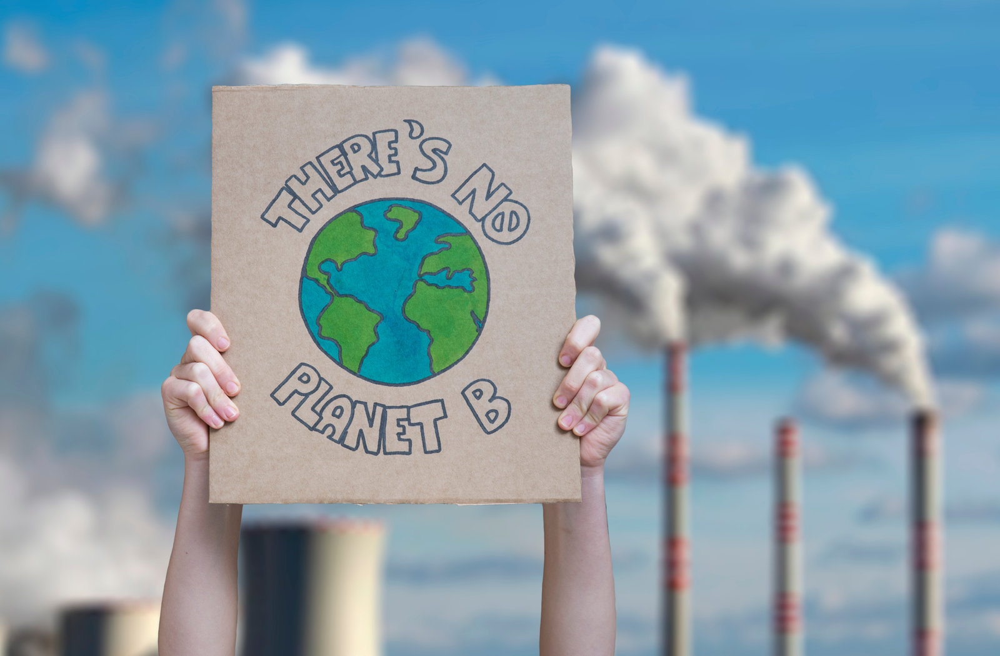

Ideas for a
resilient future.
We catalyze transitions toward a low-carbon and climate-resilient system by integrating technology, finance, and policy innovation.

About the Lab
IMPACT Lab
Integrating Multidisciplinary Perspectives to Advance Climate Transition
At the IMPACT Lab, we study how various stakeholders (i.e., owners and managers of infrastructure assets, investors, and policymakers) should explicitly and systematically integrate sustainability issues into their decision-making processes, as well as how technology and policy can facilitate this transition.
We are particularly interested in exploring these subjects in infrastructure (e.g., energy, transportation, and cities) assets because rapidly growing climate risks significantly affect their valuation.
ResearchResearch
Three main research pillars
We develop and apply a framework to create and capture material impacts from climate change and a low-carbon transition on infrastructure assets, investment portfolios, and financial systems.
Climate Risk Analysis
Assessing, projecting, and managing climate-related financial risks through empirical analysis, scenario analysis, and stress testing.

Sustainability Integration
Exploring how sustainability and climate resilience can create economic, social, and environmental benefits.
Digital Innovation
Conducting data-driven research on the systematic assessment of low-carbon economy implementation.